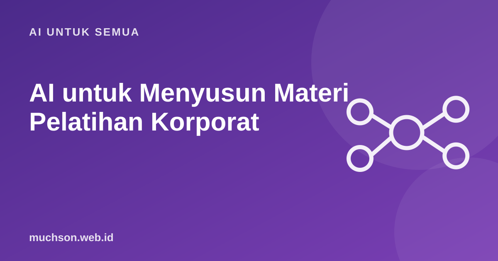

Beranda › Artikel › AI untuk Semua
AI untuk SemuaAI untuk Menyusun Materi Pelatihan Korporat
Saya menyusun materi, playground interaktif, dan tugas untuk program pelatihan korporat berbahasa Inggris dan Jerman, termasuk modul Customer Success, UX, Green IT, dan Digital Learning. AI mempercepat banyak bagian pekerjaan itu. Tetapi ada bagian yang tidak boleh diserahkan begitu saja, dan di situlah kualitas pelatihan ditentukan.

Di mana AI paling membantu
| Tahap | Peran AI | Peran manusia |
|---|---|---|
| Analisis kebutuhan | Merangkum hasil survei dan wawancara | Menentukan masalah kinerja yang sebenarnya |
| Tujuan belajar | Mengusulkan rumusan terukur | Memastikan sesuai kebutuhan bisnis |
| Kerangka modul | Draf urutan dan durasi | Menyesuaikan dengan peserta dan waktu nyata |
| Studi kasus | Membuat skenario dan data simulasi | Memeriksa realisme dan bias |
| Kuis dan tugas | Membuat banyak variasi soal | Memilih, memperbaiki, menguji |
| Terjemahan | Draf cepat | Penutur asli memeriksa istilah dan nada |
Prompt kerangka modul
Kontrol kualitas: wajib dilakukan manusia
Saat memakai AI dengan dokumen internal klien, pastikan sesuai perjanjian kerahasiaan dan kebijakan data mereka. Gunakan layanan dengan perlindungan data bisnis, atau samarkan data sensitif.
Membuat playground dan latihan interaktif
AI juga sangat membantu membuat latihan interaktif: simulasi chat pelanggan, kalkulator kasus bisnis, atau kuis bercabang dalam satu halaman HTML. Pola yang saya pakai: tentukan dulu keputusan apa yang harus dilatih peserta, minta AI membuat prototipe, lalu uji dengan peserta dan perbaiki. Hasil latihan bisa diekspor menjadi dokumen kerja agar peserta membawa pulang sesuatu yang dipakai.
Tanya jawab
Berapa banyak waktu yang bisa dihemat?
Apakah materi buatan AI perlu diungkapkan ke klien?
Bagaimana dengan video pelatihan dan avatar AI?
Sumber dan bacaan lanjut
- Merancang kurikulum pelatihan dengan ADDIE dan Bloom (artikel terkait)
- Menulis tujuan pembelajaran terukur ABCD (artikel terkait)
- Merancang e-learning yang tidak membosankan (artikel terkait)